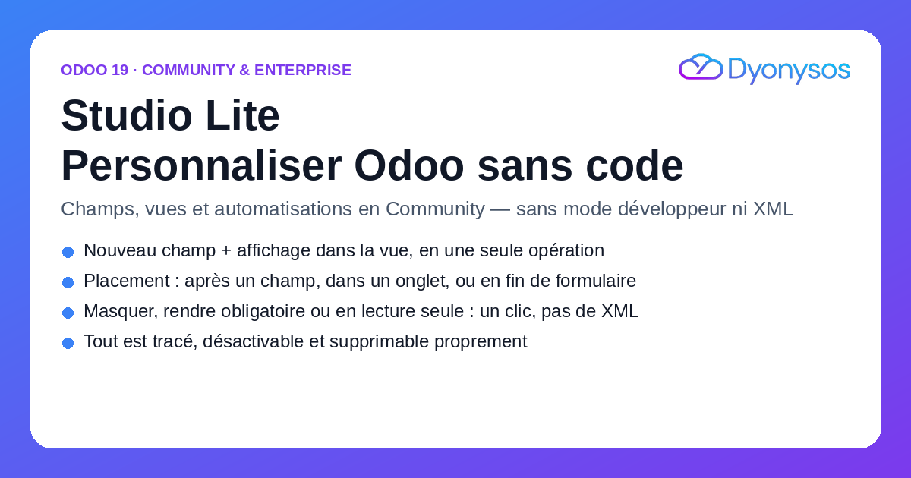
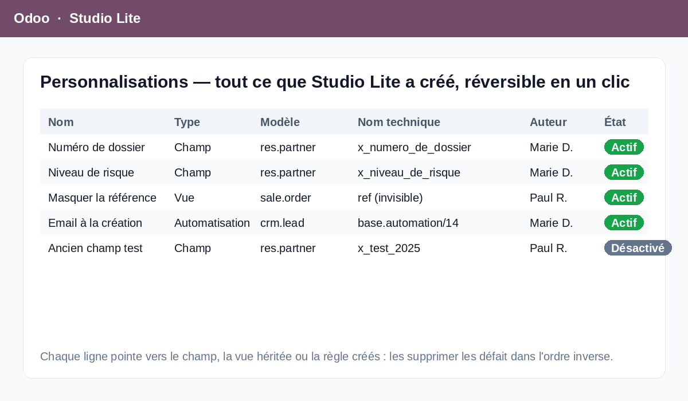
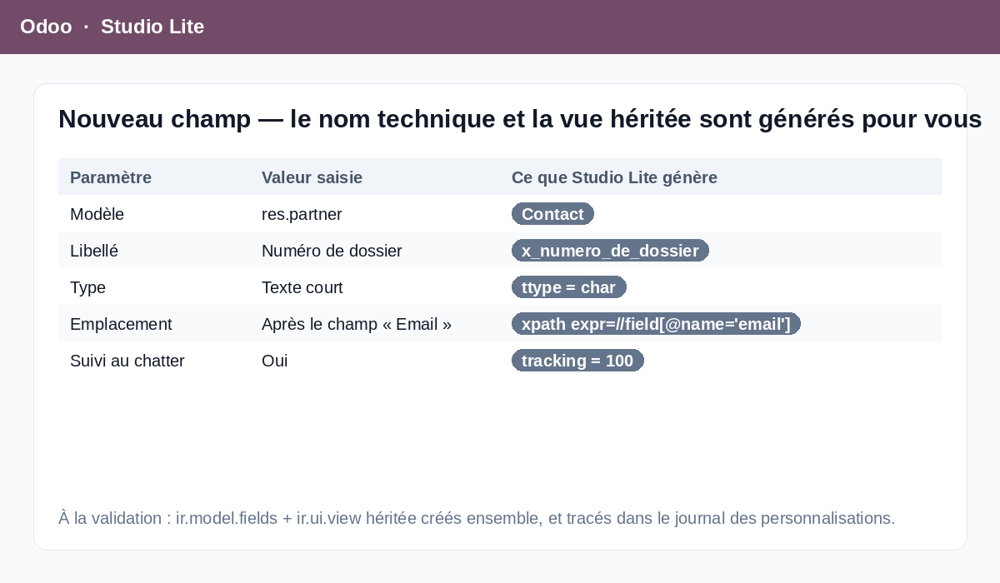

Odoo Studio est réservé à l'édition Enterprise. Pourtant, Odoo Community sait déjà
tout faire : les champs personnalisés existent (ir.model.fields), les vues
héritées existent (ir.ui.view), les automatisations existent
(base.automation). Ce qui manque, c'est l'interface. Aujourd'hui, ajouter un
champ « Numéro de dossier » sur un contact et l'afficher au bon endroit demande d'activer
le mode développeur, de créer le champ à la main, puis d'écrire soi-même une vue héritée
en XML — et de se souvenir de ce qu'on a fait le jour où il faut le défaire.
Studio Lite apporte cette interface, et surtout le filet de sécurité qui va avec : tout ce que le module crée est tracé, désactivable et supprimable proprement.
Un assistant : modèle, libellé, type (14 types, du texte court au many2many), options
selon le type, puis l'emplacement. À la validation, le champ x_...
et la vue héritée qui l'affiche sont créés en une seule opération.
Le nom technique est déduit du libellé et validé.
Placez le champ après un champ existant, dans un onglet précis, ou en fin de
formulaire. Sur les champs déjà présents : masquer, rendre obligatoire ou passer
en lecture seule — Studio Lite écrit la vue héritée
(position="attributes") à votre place.
« Quand un enregistrement est créé / modifié, quand un champ change, quand une
condition devient vraie — alors envoyer un email, mettre à jour un champ, créer une
activité ou ajouter un abonné. » La règle base.automation et son action
serveur sont générées et référencées.
C'est ce qui distingue Studio Lite d'un bricolage en mode développeur : chaque champ, chaque vue héritée et chaque automatisation créés apparaissent dans un journal unique — type, modèle, nom technique, description, date, auteur, état actif. On y désactive une personnalisation d'un clic (sans rien détruire), ou on la supprime : le module défait alors les objets dans l'ordre inverse de leur création — la vue héritée d'abord, le champ ensuite — pour ne jamais laisser de vue orpheline ni de colonne fantôme.


Soyons clairs : ce module n'est pas Odoo Studio. Il ne propose pas d'édition visuelle par glisser-déposer, ne crée pas de nouveaux modèles ni de nouvelles applications, ne construit pas de rapports PDF, de vues kanban sur mesure ou de tableaux de bord, et ne gère pas les approbations. Il couvre l'essentiel des demandes de personnalisation quotidiennes — ajouter un champ, le placer, en masquer un autre, déclencher un email — soit, d'expérience, la large majorité des besoins réels d'une PME sur Community.
ir.*, base.*, res.users,
res.groups, modèles temporaires et abstraits) sont refusés avec un message explicite.^x_[a-z0-9_]+$ ; un champ déjà existant est refusé.x_ ou qui n'est pas
un champ manuel : les champs standard d'Odoo sont intouchables.
Odoo 19 (Community ou Enterprise). Dépendances : base, web,
mail et base_automation (module standard d'Odoo, installé
automatiquement). Après installation, donnez le groupe
Studio Lite / Designer aux personnes concernées : le menu Studio Lite
apparaît alors dans la barre d'applications.
Édité et maintenu par DYONYSOS — modules Odoo pour PME françaises.
Support, question avant achat ou demande d'évolution :
welcome@dyonysos.fr
https://dyonysos.fr
Licence OPL-1. Réponse sous 2 jours ouvrés.